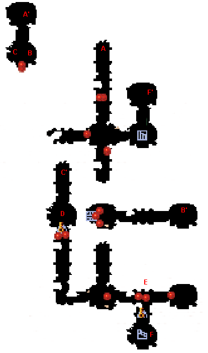
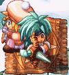
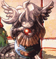
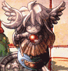
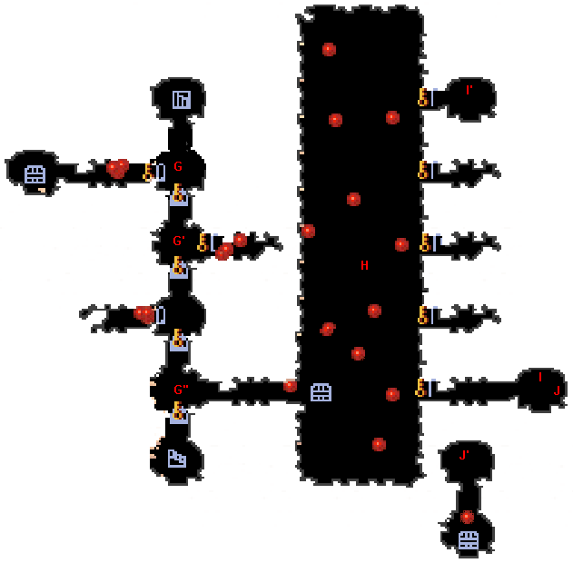
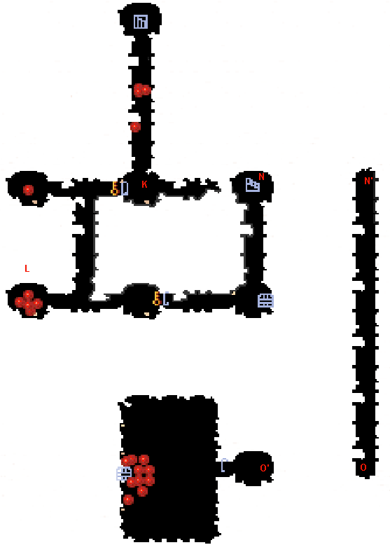

| 概要 | 情報 | アイテム一覧 |
| 敵キャラ一覧 | ステージ一覧 | 夢幻迷宮について |
| 攻略チャート | Zwei!! 攻略へ |
| ステージ選択へ |
アプリエス Lv.17
|  | |
| A  |
A-A'間はマントで移動します。 |
| B |
B-B'間はマントで移動します。 |
| C |
C-C'間はマントで移動します。 |
D |
D地点には、このオブジェクトが2つあります。 片方が消える前に、素早く両方とも明かりをともしてください。 そうすれば、扉が開きます。 |
E   |
E地点には、太陽の女神像と月の女神像を置く場所があります。 プレートと、杖の種類を見て置く場所を判断してください。 |
| F |
F-F'間はマントで移動します。 |
|  | |
| G |
G、G'、G''地点にはオブジェクトがあります。 その部屋にあるオブジェクトに全て明かりをともすと、奥へ続く扉が開きます。 |
| H |
部屋Hにはこのオブジェクトが点在しています。 全てに明かりをともすと、H地点の扉と、G''地点の階段へ続く扉が開きます。 |
| I |
I-I'間はマントで移動します。 |
| J |
J-J'間はマントで移動します。 |
|  | |
| K |
K地点には、月の女神像と太陽の女神像を置く場所があります。 どのプレートにどの像を置くかは、プレートの模様と、像の持っている杖の形から判断してください。 |
| L | L地点にはこぼるとがたくさんいます。 全て倒すと、こぼるたんが現れるので注意しましょう。 |
| N |
N-N'間はマントで移動します。 |
| O |
O-O'間はマントで移動します。 |
| ステージ選択へ |
| 概要 | 情報 | アイテム一覧 |
| 敵キャラ一覧 | ステージ一覧 | 夢幻迷宮について |
| 攻略チャート | Zwei!! 攻略へ |
Zwei!!
| 目次へ戻る | ページの上部へ |